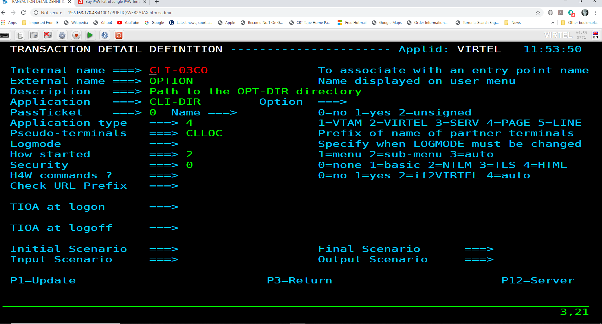
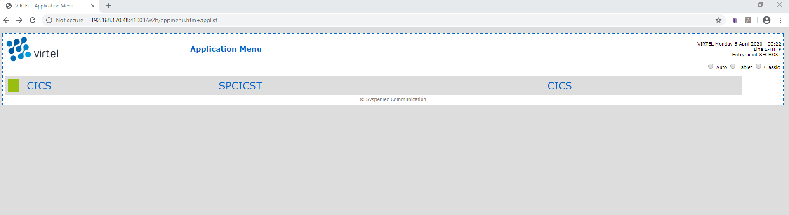

Using VBA Macros with Virtel
Introduction
The following newsletter documents how we can use a VBA macro, driven by MicroSoft Excel, to populate a spreadsheet. From the spreadsheet we drive a Virtel Scenario to obtain a member list of a TSO ISPF Dataset and then populate the spreadsheet with the results. See the Installation section to install the necessary components.
Installation
Download the zip package from the Virtel FTP website - vbaexample.zip
Expand into a directory on your PC - C:MACRO (This name is coded in the VBA macro)
Open the macro VBAExample.xlsm with Excel. Note: Enable Macros option when requested.
Upload the scenario source file VBAExample.vsc to HLQ.VIRTEL.CNTL as member TSTMACRO
Check the following MACLIB members in HLQ.VIRTEL.SCRNAPI.MACLIB
OPTION$, FOREACH$, COPY$, CASE$, ENDFOR$
Search for any X’44’(è) characters and replace them with X’7C’ (UK/US @). If you do not do this, you will get assembly errors when complying the scenario.
Upload and assemble the TSTMACRO scenario with the ASMSCEN member of the Virtel CNTL library and link the scenario to your HLQ.VIRTEL.LOADLIB.
Start Virtel
Check that your CLI 41002 line Entry Point loads scenarios from LOADLIB and not the SCE-DIR.
Go to the Admin Portal and display the CLIHOST Entry Point. Make sure the Directory for scenarios is blank. This will ensure that Virtel loads scenarios from the loadlib.
Setting the scenario LOAD option in the Entry point
Add the transaction CLI-12 to the CLIWHOST Entry point. Transaction CLI-12 is a 3270 based transaction directed towards a TSO session. It uses basic authentication (Security=1) and has an Input Scenario of TSTMACRO.

Stop and restart Virtel.
Operation
Open the the EXCEL macro VBAExample.xlsm. The following form is presented: -
 Excel Form
Excel Form
The form presents us with several controls that can be used to drive the HTTP requests between the VBA macro and Virtel.
USER:/PASS: The userid and password.
Show full URL: Revals the URL that is passed to Virtel
Virtel Host / Port: The target Virtel Host and Port
DS Name: The Mainframe Dataset name
Additional URL Parms. Keyword:Value combinations that can be passed in the URL.
Request HTTP: Button to initiate the request
Clear Results: Clear the template result area
Fill in the required details:-
USER: Your userid
PASS: Your password
Virtel Host: IP address of Virtel
Virtel Port: 41002
DS Name: Name of PDS to list
From these details, the VBA macro will generate a URL that will be used to initiate the TSTMACRO transaction. The generated URL looks like.

URL genereted from the EXCEL macro
Press the HTTP request button to initiate the transaction. After the transaction has completed the form will be populated with a member list. The final results look like: -

Appendix A
VBA Example Scenario
TSTMACRO SCREENS APPL=TSTMACRO
*######################################################################
*## INPUT SCENARIO ##
*######################################################################
*
SCENARIO INPUT
DEBUG$ TRACE,SCENARIO
*
COPY$ INPUT-TO-VARIABLE,FIELD='userName',VAR='userName'
IF$ NOT-FOUND,THEN=PARAM_ERR_USER
COPY$ INPUT-TO-VARIABLE,FIELD='password',VAR='password'
IF$ NOT-FOUND,THEN=PARAM_ERR_PWD
COPY$ INPUT-TO-VARIABLE,FIELD='dsname',VAR='dsname'
IF$ NOT-FOUND,THEN=PARAM_ERR_DSNAME,ELSE=LOGON
*
PARAM_ERR_USER EQU *
COPY$ VALUE-TO-VARIABLE,VAR=ErrorMsg,TYPE=REPLACE, *
VALUE='Missing required parameter (userName)'
GOTO$ ERRORMSG
*
PARAM_ERR_PWD EQU *
COPY$ VALUE-TO-VARIABLE,VAR=ErrorMsg,TYPE=REPLACE, *
VALUE='Missing required parameter (password)'
GOTO$ ERRORMSG
*
PARAM_ERR_DSNAME EQU *
COPY$ VALUE-TO-VARIABLE,VAR=ErrorMsg,TYPE=REPLACE, *
VALUE='Missing required parameter (dsname)'
GOTO$ ERRORMSG
*
LOGON EQU *
ERROR$ 0,'--- LOGON '
*
CASE$ (01,12,12), *
(EQ,'ENTER USERID',DOUSN)
*
COPY$ VALUE-TO-VARIABLE,VALUE='Not (UserID Logon) Screen', *
VAR=ErrorMsg,TYPE=REPLACE
GOTO$ ERRORMSG_WITH_SCREEN
*
DOUSN EQU *
ERROR$ 0,'--- DOUSN'
*
ERROR$ 0,'userName=','*userName'
COPY$ VARIABLE-TO-SCREEN,VAR='userName', *
SCREEN=(2,1,7),TYPE=ERASE-FIELD
ACTION$ TO-APPLICATION,KEY=7D, *
AND=(PROCESS-RESPONSE)
*
IF$ (01,34,11), *
EQ='TSO/E LOGON', *
THEN=DOPASS
*
COPY$ VALUE-TO-VARIABLE,VALUE='Not (TSO Logon) Screen', *
VAR=ErrorMsg,TYPE=REPLACE
GOTO$ ERRORMSG_WITH_SCREEN
*
DOPASS EQU *
ERROR$ 0,'--- DOPASS'
*
ERROR$ 0,'password=','*password'
COPY$ VARIABLE-TO-SCREEN,VAR='password', *
SCREEN=(8,20,8),TYPE=ERASE-FIELD
DOISPF LABEL$
ACTION$ TO-APPLICATION,KEY=7D, *
AND=(WAIT,'ispf'), *
MAXTIME=500
*
ERROR$ 0,'Look for ISPF in line 10'
IF$ (10,2,4), *
EQ='ispf', *
THEN=PASSDONE
ERROR$ 0,'Look for ISPF in line 11'
IF$ (11,2,4), *
EQ='ispf', *
THEN=PASSDONE
ERROR$ 0,'Look for ISPF in line 12'
IF$ (12,2,4), *
EQ='ispf', *
THEN=PASSDONE
ERROR$ 0,'Look for ISPF in line 13'
IF$ (13,2,4), *
EQ='ispf', *
THEN=PASSDONE
*
* Check for common login errors
*
IF$ (2,12,17), *
EQ='PASSWORD NOT AUTH', *
THEN=LOGON_BADPASS
IF$ (2,12,6), *
EQ='Userid', *
THEN=LOGON_BADUSER_MAYBE
*
* Generic login error message
*
LOGON_GENERIC EQU *
COPY$ VALUE-TO-VARIABLE,VAR='ErrorMsg',TYPE=REPLACE, *
VALUE='ISPF screen not found (Is the user logged in?)'
GOTO$ ERRORMSG_WITH_SCREEN
*
LOGON_BADUSER_MAYBE EQU *
IF$ (2,27,8), *
EQ='not auth', *
THEN=LOGON_BADUSER, *
ELSE=LOGON_GENERIC
*
* Invalid User
*
LOGON_BADUSER EQU *
COPY$ VALUE-TO-VARIABLE,VAR='ErrorMsg',TYPE=REPLACE, *
VALUE='Login failed (Invalid User)'
GOTO$ ERRORMSG_WITH_SCREEN
*
* Invalid Password
*
LOGON_BADPASS EQU *
COPY$ VALUE-TO-VARIABLE,VAR='ErrorMsg',TYPE=REPLACE, *
VALUE='Login failed (Invalid Password)'
GOTO$ ERRORMSG_WITH_SCREEN
*
PASSDONE EQU *
ERROR$ 0,'--- PASSDONE'
*
ACTION$ TO-APPLICATION,KEY=7D, *
AND=(PROCESS-RESPONSE)
IF$ (3,29,12), *
EQ='ISPF Primary', *
THEN=DOOPTION
*
COPY$ VALUE-TO-VARIABLE,VALUE='Not (Primary Menu) screen', *
VAR=ErrorMsg,TYPE=REPLACE
GOTO$ ERRORMSG_WITH_SCREEN
*
DOOPTION EQU *
*
ERROR$ 0,'--- DOOPTION'
*
ERROR$ 0,'Sending (=3.4)'
COPY$ VALUE-TO-VARIABLE,VALUE='=3.4', *
VAR='input',TYPE=REPLACE
COPY$ VARIABLE-TO-SCREEN,VAR='input', *
SCREEN=(4,40,4),TYPE=ERASE-FIELD
ACTION$ TO-APPLICATION,KEY=7D, *
AND=(PROCESS-RESPONSE)
IF$ (3,30,13), *
EQ='Data Set List', *
THEN=DODATASET
*
COPY$ VALUE-TO-VARIABLE,VALUE='Not (DataSet Menu) screen', *
VAR=ErrorMsg,TYPE=REPLACE
GOTO$ ERRORMSG_WITH_SCREEN
*
DODATASET EQU *
*
ERROR$ 0,'--- DODATASET'
*
ERROR$ 0,'Sending Dsname (','*dsname',')'
COPY$ VARIABLE-TO-SCREEN,VAR='dsname', *
SCREEN=(10,24,46),TYPE=ERASE-FIELD
ACTION$ TO-APPLICATION,KEY=7D, *
AND=(PROCESS-RESPONSE)
IF$ (3,16,13), *
EQ='Sets Matching', *
THEN=DOCONTENT
*
COPY$ VALUE-TO-VARIABLE,VALUE='Not (DataSet Match) screen', *
VAR=ErrorMsg,TYPE=REPLACE
GOTO$ ERRORMSG_WITH_SCREEN
*
DOCONTENT EQU *
*
ERROR$ 0,'--- DOCONTENT'
*
ERROR$ 0,'Sending (E)'
COPY$ VALUE-TO-VARIABLE,VALUE='e',VAR='input',TYPE=REPLACE
COPY$ VARIABLE-TO-SCREEN,VAR='input', *
SCREEN=(8,28,1),TYPE=ERASE-FIELD
ACTION$ TO-APPLICATION,KEY=7D, *
AND=(PROCESS-RESPONSE)
*
COPY$ SCREEN-TO-VARIABLE,SCREEN=(06,12,69,17),VAR='lines', X
TYPE=REPLACE
ERROR$ 0,'Setting lines ','*lines'
COPY$ VALUE-TO-VARIABLE,VAR='response',VALUE='OK:', X
TYPE=REPLACE
GOTO$ APPEND_SCREEN
*
LOGOFF EQU *
ERROR$ 0,'--- DOLOGOFF'
*
CASE$ (04,02,07),(EQ,'Command',DOLOGOFF)
ERROR$ 0,'Not logged - Skipping logoff'
GOTO$ RETURN_RESPONSE
*
DOLOGOFF LABEL$
ERROR$ 0,'Sending (=X)'
PERFORM$ TRACE
COPY$ VALUE-TO-VARIABLE,VALUE='=X', *
VAR='clear',TYPE=REPLACE
COPY$ VARIABLE-TO-SCREEN,VAR='clear', *
SCREEN=(4,40,2),TYPE=ERASE-FIELD
ACTION$ TO-APPLICATION,KEY=7D, *
AND=(WAIT,'READY'), *
MAXTIME=500
*
ERROR$ 0,'Sending (LOGOFF)'
PERFORM$ TRACE
COPY$ VALUE-TO-VARIABLE,VALUE='LOGOFF', *
VAR='logoff',TYPE=REPLACE
COPY$ VARIABLE-TO-SCREEN,VAR='logoff', *
SCREEN=(2,2,6),TYPE=ERASE-FIELD
ACTION$ TO-APPLICATION,KEY=7D, *
AND=(WAIT,'LOGGED OFF'), *
MAXTIME=5000
PERFORM$ TRACE
*
ERROR$ 0,'User Logged Off'
GOTO$ RETURN_RESPONSE
*
*
*
*######################################################################
*## H E L P E R S ##
*######################################################################
*
ERRORMSG EQU *
ERROR$ 0,'*ErrorMsg'
COPY$ LIST-TO-VARIABLE,VAR='response',TYPE=REPLACE, *
LIST=('KO:','*ErrorMsg')
GOTO$ RETURN_RESPONSE
*
ERRORMSG_WITH_SCREEN EQU *
ERROR$ 0,'*ErrorMsg'
COPY$ LIST-TO-VARIABLE,VAR='response',TYPE=REPLACE, *
LIST=('KO:','*ErrorMsg')
COPY$ VALUE-TO-VARIABLE,VAR='response',VALUE='(*SCREEN*)'
*
APPEND_SCREEN EQU *
*
**Only 17 lines were read
*
ERROR$ 0,'Setting screen to response'
COPY$ LIST-TO-VARIABLE,VAR='response',LIST=('01:','*lines')
POP$ FIRST-VALUE-OF,VAR='lines'
COPY$ LIST-TO-VARIABLE,VAR='response',LIST=('02:','*lines')
POP$ FIRST-VALUE-OF,VAR='lines'
COPY$ LIST-TO-VARIABLE,VAR='response',LIST=('03:','*lines')
POP$ FIRST-VALUE-OF,VAR='lines'
COPY$ LIST-TO-VARIABLE,VAR='response',LIST=('04:','*lines')
POP$ FIRST-VALUE-OF,VAR='lines'
COPY$ LIST-TO-VARIABLE,VAR='response',LIST=('05:','*lines')
POP$ FIRST-VALUE-OF,VAR='lines'
COPY$ LIST-TO-VARIABLE,VAR='response',LIST=('06:','*lines')
POP$ FIRST-VALUE-OF,VAR='lines'
COPY$ LIST-TO-VARIABLE,VAR='response',LIST=('07:','*lines')
POP$ FIRST-VALUE-OF,VAR='lines'
COPY$ LIST-TO-VARIABLE,VAR='response',LIST=('08:','*lines')
POP$ FIRST-VALUE-OF,VAR='lines'
COPY$ LIST-TO-VARIABLE,VAR='response',LIST=('09:','*lines')
POP$ FIRST-VALUE-OF,VAR='lines'
COPY$ LIST-TO-VARIABLE,VAR='response',LIST=('10:','*lines')
POP$ FIRST-VALUE-OF,VAR='lines'
COPY$ LIST-TO-VARIABLE,VAR='response',LIST=('11:','*lines')
POP$ FIRST-VALUE-OF,VAR='lines'
COPY$ LIST-TO-VARIABLE,VAR='response',LIST=('12:','*lines')
POP$ FIRST-VALUE-OF,VAR='lines'
COPY$ LIST-TO-VARIABLE,VAR='response',LIST=('13:','*lines')
POP$ FIRST-VALUE-OF,VAR='lines'
COPY$ LIST-TO-VARIABLE,VAR='response',LIST=('14:','*lines')
POP$ FIRST-VALUE-OF,VAR='lines'
COPY$ LIST-TO-VARIABLE,VAR='response',LIST=('15:','*lines')
POP$ FIRST-VALUE-OF,VAR='lines'
COPY$ LIST-TO-VARIABLE,VAR='response',LIST=('16:','*lines')
POP$ FIRST-VALUE-OF,VAR='lines'
COPY$ LIST-TO-VARIABLE,VAR='response',LIST=('17:','*lines')
POP$ FIRST-VALUE-OF,VAR='lines'
*
LOOP1 FOREACH$ VALUE-IN-VARIABLE,VAR='response'
COPY$ VARIABLE-TO-VARIABLE,VAR=('response','VAR2'), X
FOREACH=LOOP1,TYPE=REPLACE
ENDFOR$ LOOP1
GOTO$ LOGOFF
*
RETURN_RESPONSE EQU *
ERROR$ 0,'Returning response'
CONVERT$ EBCDIC-TO-ASCII,VAR='response',TABLE='IBM1147'
SEND$ AS-ANSWER,VAR='response',TYPE='text/plain', *
EXPIRES=IMMEDIATELY
DEBUG$ NOTRACE,SCENARIO
*
SCENARIO END
*
*######################################################################
*## OUTPUT SCENARIO ##
*######################################################################
*
SCENARIO OUTPUT
SCENARIO END
*
*****************
*** TRACE ***
*****************
*
TRACE SCENARIO SUBROUTINE
*
COPY$ VALUE-TO-VARIABLE,VAR='ruler1', X
VALUE='--- 0---|--- 10---|--- 20---|--- 30---|--- 40---X
|--- 50---|--- 60---|--- 70---|--- 80---|', X
TYPE=REPLACE
COPY$ VALUE-TO-VARIABLE,VAR='ruler2', X
VALUE='123456789|123456789|123456789|123456789|123456789X
|123456789|123456789|123456789|123456789|', X
TYPE=REPLACE
ERROR$ 0,' ','*ruler1'
ERROR$ 0,' ','*ruler2'
LOOP1 FOREACH$ VALUE-IN-SCREEN,SCREEN=(1,1,80,24)
COPY$ SCREEN-TO-VARIABLE,SCREEN=(=,01,80),VAR='screenL', X
TYPE=REPLACE
COPY$ SYSTEM-TO-VARIABLE,VAR='L1',LENGTH=2, *
FIELD=(VALUE-OF,CURRENT-LINE),TYPE=REPLACE
ERROR$ 0,'line ','*L1','== ','*screenL'
ENDFOR$ LOOP1
*
ENDTRACE LABEL$
POP$ VAR='screenL'
SCENARIO END
SCRNEND
*
END
Appendix B
VBA Macro
'==========================================================================
'==========================================================================
'
' Top-level MACROS for Excel
'
'==========================================================================
'==========================================================================
' - MACRO -
' > Performs a POST HTTP request on the generated URL,
' > Extracts data from the received content (if successful),
' > Injects the extracted data into the sheet 'output' cells
'
Sub ProcessHTTP()
Dim baseURL As String
Dim prms As String
Dim body As String
Dim url As String
Dim content As String
Dim usrName As String
Dim usrPass As String
Call ResetResults
Call ClearScreen
' Gather miscellaneous pieces of information from the active sheet
usrName = ActiveSheet.Range(g_userNameRange).Value
usrPass = ActiveSheet.Range(g_userPassRange).Value
baseURL = buildBaseUrl(g_baseUrl)
prms = buildUrlParams(g_urlParamsRange)
url = buildURL(baseURL, prms)
body = ""
' Send the HTTP request, and get back the received content
content = sendHttpRequest(url, , body, usrName, usrPass)
' Handle the HTTP response if no error occured
If (content <> "") Then
handleHttpResponse (content)
End If
End Sub
' - MACRO -
' Clear the result cells
'
Sub ResetResults()
Call clearCells(g_responseRange, g_responseCols)
End Sub
' - MACRO - [DEBUG] -
' Displays the generated URL
'
Sub ShowURL()
Dim url As String
Dim res As String
url = buildURL(buildBaseUrl(g_baseUrl), buildUrlParams(g_urlParamsRange))
res = "The generated URL is :" & vbCrLf & vbCrLf & "[" & url & "]"
MsgBox res
End Sub
'=============================================================================
'=============================================================================
'
' Functions and subs
'
'=============================================================================
'=============================================================================
' Extract the meaningful data lines from the received body, and store them into
' the output lines array. This array size is dynamically adjusted to hold any amount of entries.
' The last entry in this array is always followed by an empty marker entry.
'
Function extractDataFromResponse(ByVal content As String, ByRef lines() As String) As Long
ReDim lines(17)
Dim nbLines As Long
Dim startIdx As Long
Dim nextIdx As Long
Dim stopIdx As Long
Dim line As String
startIdx = 4
nbLines = 0
Do
line = Trim(Mid(content, startIdx, startIdx + 69))
lines(nbLines) = line
nbLines = nbLines + 1
startIdx = startIdx + 69 + 3
Loop While (nbLines < 17)
extractDataFromResponse = nbLines
End Function
' Perform a synchronous HTTP request on the specified URL (using the specified body)
' If an error occurs, this function returns an empty string.
' Otherwise, it returns the body as recieved from the host.
'
Function sendHttpRequest(ByVal url As String, _
Optional ByVal mode As String = "POST", _
Optional ByVal body As String = "", _
Optional ByVal userName As String = "", _
Optional ByVal password As String = "") As String
If (g_DEBUG_IN) Then
Call MsgBox(url & vbCrLf & vbCrLf & body, vbOKOnly, "HTTP Request")
End If
Dim http As Object
Set http = CreateObject("MSXML2.XMLHTTP")
http.Open mode, url, False, userName, password
http.setRequestHeader "User-Agent", "Mozilla/4.0 (compatible; MSIE 6.0; Windows NT 5.0)"
' http.setRequestHeader "Content-type", "application/x-www-form-urlencoded"
http.setRequestHeader "Content-type", "text/plain"
http.Send (body)
sendHttpRequest = validateHttpResponse(http)
If (g_DEBUG_OUT And (sendHttpRequest <> "")) Then
Dim size As Long
size = Len(sendHttpRequest)
Call MsgBox(sendHttpRequest, , "SUCCESS - Received " & size & " bytes")
End If
End Function
' Returns eihter an empty string if the HTTP response status is not 200 (and display the error message),
' or the received content otherwise.
'
Function validateHttpResponse(http As Object) As String
Dim text As String
Dim resText As String
Call saveText(g_TRACE_FILE, http.responseText)
resText = saveScreenAndExtractText(g_SCREEN_FILE, http.responseText)
text = getHttpErrorText(http)
If (text <> "") Then
text = text & vbCrLf & "_____________________________________" & vbCrLf & http.responseText
MsgBox text, , "HTTP Request FAILED"
validateHttpResponse = ""
Exit Function
End If
text = resText
If (Left(text, 3) = "OK:") Then
text = Mid(text, 4)
validateHttpResponse = text
Exit Function
End If
If (Left(text, 3) = "KO:") Then
text = "Applicative Error :" & vbCrLf & vbCrLf & Mid(text, 4)
Else
text = text & vbCrLf & "_____________________________________" & vbCrLf & resText
End If
MsgBox text, , "Request Failure"
validateHttpResponse = ""
End Function
' Perform a synchronous HTTP request on the specified URL (using the specified body)
' If an error occurs, this function returns an empty string.
' Otherwise, it returns the body as recieved from the host.
'
Function handleHttpResponse(ByVal content As String) As Boolean
Dim lines() As String
' Dim line As String
Dim cell As Range
Dim idx As Long
Dim nbLines As Long
nbLines = extractDataFromResponse(content, lines)
For Each cell In ActiveSheet.Range(g_responseRange).cells
' line = lines(idx)
If (idx = nbLines) Then Exit For
Call injectResponseLine(cell, lines(idx))
' cell.Value = line
idx = idx + 1
Next
handleHttpResponse = True ' successful
End Function
Sub injectResponseLine(ByVal cell As Range, line As String)
Dim col As Long
Dim row As Long
row = cell.row
col = cell.Column
ActiveSheet.cells(row, col + 0).Value = RTrim(Mid(line, 1, 8)) ' Name
ActiveSheet.cells(row, col + 2).Value = LTrim(Mid(line, 20, 8)) ' Size
ActiveSheet.cells(row, col + 3).Value = RTrim(Mid(line, 30, 11)) ' Created
ActiveSheet.cells(row, col + 4).Value = RTrim(Mid(line, 44, 18)) ' Changed
ActiveSheet.cells(row, col + 5).Value = RTrim(Mid(line, 63, 7)) ' ID
End Sub
' Extract the error text from an HTTP object.
'
Function getHttpErrorText(http As Object) As String
If (http.Status = 200) Then ' Request successful
getHttpErrorText = ""
Exit Function
End If
getHttpErrorText = "Status code : " & http.Status & vbCrLf _
& "Status text : " & http.statusText
End Function
' Append the User/Pass/DSName params to the provided base URL
'
' TODO : Add some HTML-escaping on the extracted value
'
Function buildBaseUrl(baseURL As String) As String
Dim url As String
Dim host As String
Dim port As String
host = LTrim(RTrim(ActiveSheet.Range(g_virtelHostRange).Value))
port = LTrim(RTrim(ActiveSheet.Range(g_virtelPortRange).Value))
url = "http://" & host & ":" & port & baseURL
If (InStr(1, baseURL, "?") < 1) Then
url = url & "?"
Else
url = url & "&"
End If
url = url & "userName=" & LTrim(RTrim(ActiveSheet.Range(g_userNameRange).Value))
url = url & "&password=" & LTrim(RTrim(ActiveSheet.Range(g_userPassRange).Value))
url = url & "&dsname=" & LTrim(RTrim(ActiveSheet.Range(g_DSNameRange).Value))
buildBaseUrl = url
End Function
' Extract the 'URL params' from the active sheet, in the specified cells range,
' and return them as an URL parameters string.
' The parameters extraction stops when the first empty name's cell is encountered.
'
' TODO : Add some HTML-escaping on the extracted value
'
Function buildUrlParams(paramsRange As String) As String
Dim cells As Variant
Dim res As String, prmName As String
Dim idx As Long
Dim sep As String
cells = ActiveSheet.Range(paramsRange).Value
For idx = LBound(cells, 1) To UBound(cells, 1)
prmName = cells(idx, 1)
If (prmName = "") Then Exit For
res = res & sep & prmName & "=" & cells(idx, 2)
sep = "&"
Next
buildUrlParams = res
End Function
' Merges a base URL and an (optionnal) parameters into a full URL address.
'
Function buildURL(ByVal baseURL As String, Optional ByVal params As String = "") As String
Dim separator As String
If (params <> "") Then
separator = "?"
' Do not use '?' if it is already found in the base URL (in such a case, use '&' instead)
If (InStr(baseURL, "?") > 0) Then separator = "&"
buildURL = baseURL & separator & params
Else
buildURL = baseURL
End If
End Function
' Save some text into the specified file.
'
Private Sub saveTextOld(ByVal path As String, ByVal content As String)
On Error GoTo saveTextError
Dim fso As Object
Dim file As Object
Set fso = CreateObject("Scripting.FileSystemObject")
Set file = fso.opentextfile(path, 2, True)
file.Write content
file.Close
Exit Sub
saveTextError:
On Error GoTo 0
MsgBox Err.Number & vbLf & Err.Description, "Trace file saving error"
End Sub
Private Sub saveText(ByVal path As String, ByVal content As String)
On Error GoTo saveTextError
Dim strFile_Path As String
strFile_Path = path
Open strFile_Path For Append As #1
Write #1, Now() & " : " & content
Close #1
Exit Sub
saveTextError:
On Error GoTo 0
MsgBox Err.Number & vbLf & Err.Description, "Trace file saving error"
End Sub
Private Function saveScreenAndExtractText(ByVal path As String, ByVal content As String) As String
Dim idx As Long
idx = InStr(1, content, g_ScreenTag)
If (idx < 1) Then
' The response does not contain any screen dump
saveScreenAndExtractText = content
Exit Function
End If
saveScreenAndExtractText = Left(content, idx - 1)
If (Left(content, 3) = "KO:") Then
Sheets(2).Range(g_ScreenMsgRange).Interior.Color = RGB(255, 255, 64)
Sheets(2).Range(g_ScreenMsgRange).Value = " " & Mid(saveScreenAndExtractText, 4)
End If
Dim scrData As String
Dim i As Long
Dim line As String
' Expected format is:
' (*SCREEN*)#01:<80 bytes>#02:<80 bytes>...#24:<80 bytes>
idx = idx + Len(g_ScreenTag) + 4
For i = 0 To 23
line = Mid(content, idx + (i * 84), 80)
Sheets(2).cells(i + g_ScreenRow, g_ScreenColumn).Value = line
scrData = scrData & line & vbCrLf
Next
Sheets(2).Select
Sheets(2).Range(g_ScreenMsgRange).Select
' Save the screen content into the specified trace file
Call saveText(path, scrData)
End Function
Private Sub ClearScreen()
Dim i As Integer
For i = 0 To 23
Sheets(2).cells(i + g_ScreenRow, g_ScreenColumn).ClearContents
Next
Sheets(2).Range(g_ScreenMsgRange).ClearContents
Sheets(2).Range(g_ScreenMsgRange).Interior.Color = RGB(255, 255, 255)
End Sub
' Clear the specified range of cells
'
Sub clearCells(ByVal targetRange As String, Optional ByVal cols As Long = 1)
Dim cell As Range
For Each cell In ActiveSheet.Range(targetRange).cells
cell.ClearContents
If (cols > 1) Then
Dim c As Long
For c = 2 To cols
cells(cell.row, cell.Column + c - 1).ClearContents
Next
End If
Next
End Sub